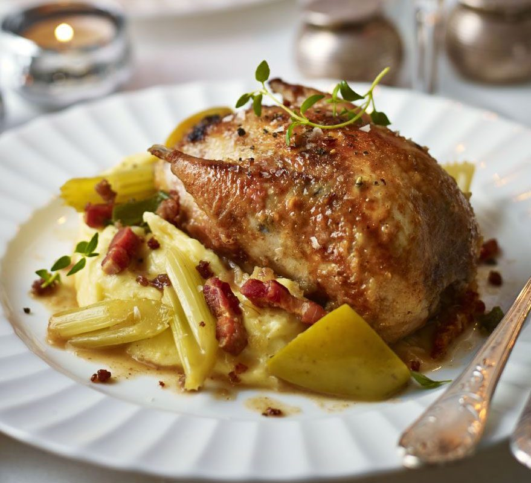

Cajun Chicken Ragout

Pulled chicken, Cajun sausage, and peppers stew in a rich, spicy gravy.
"This is an old, personal favorite recipe of mine," says Chef John.
"While not totally authentic, it celebrates the fabulous flavors of Cajun cuisine.
Serve this thick sauce over rice."
Ingredients
- 6 slices bacon, cut into 1/4-inch pieces
- 1 large onion, diced
- 2 ribs celery, diced
- 1 pinch salt
- 1 green bell pepper, diced
Steps
- Cook and stir bacon in a skillet over medium heat until crisp, about 10 minutes. Transfer bacon to a bowl with a slotted spoon, reserving 2 tablespoons bacon fat in the pan.
- Return skillet to medium heat; cook and stir onion, celery, and a pinch of salt until onion begins to soften, about 5 minutes. Add green bell pepper, red bell pepper, and garlic; cook, stirring frequently, until bell peppers are soft, about 5 minutes.
- Pour vegetable oil into the onion mixture, sprinkle in flour, and cook until flour is browned and mixture thickens, about 5 minutes. Add 1 teaspoon black pepper, paprika, oregano, and cayenne pepper and stir to combine.
- Pour 1/4 cup of chicken broth into vegetable mixture; cook and stir, scraping any browned bits off the bottom of the pan, until combined. Add remaining broth and Worcestershire sauce. Increase heat to medium-high and simmer until sauce is thick and reduced slightly, about 10 minutes.
- Reduce heat to low. Add andouille sausage, chicken, and reserved bacon. Cook until heated hot.
Main Page